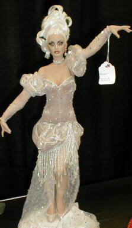
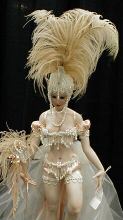
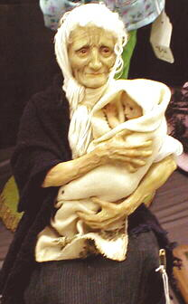
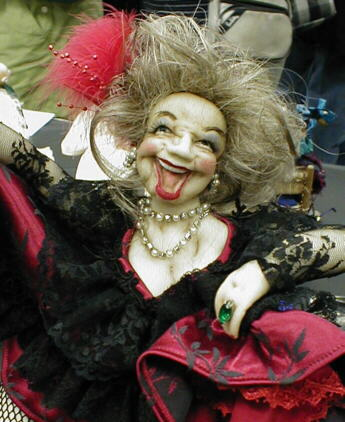
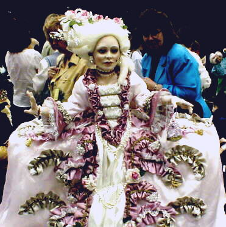

Santa Fe 2000 Doll Show - Page 3


One of the entries in the themed "Masked Ball" category.

Another entry in the themed "Masked Ball" category.

The amazing winner of the Robert McKinley Award. This award is given to a doll artist who has been making dolls for LESS than two years.

An entry in the "needlesculpted cloth" category.

I believe this doll was in the "limited edition" category, although it may have been in the "costume" section. Is this an amazing outfit or what?